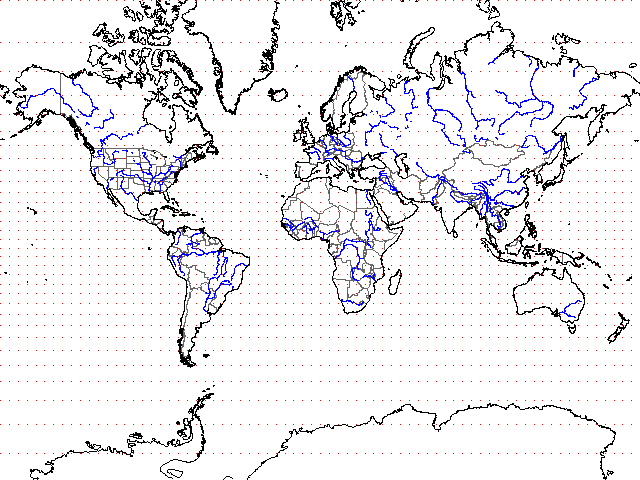

UTM Projection
The UTM projection is designed to create a rectangular cartesian grid. This allows distances and angles to be computed easily, and minimizes distortion. While the military popularized the UTM projection for ground operations, it is also ideal for many GIS operations.
 |
The Mercator projection is conformal and preserves angles, but distortion increases away from the equator. Geometrically the Mercator projection places a cylinder around the globe tangent at the equator, and unfolds it. The meridians should converge, but must be stretched to keep their intersections with the parallels as right angles. For angles to remain correct, the same degree of stretching must occur along both meridians and parallels. At the poles the stretching must be infinite, to keep the meridians from converging to a point at the poles. This means the Mercator projection can not show the poles. |
|
|
The transverse Mercator projection rotates the cylinder 90 degrees. The UTM uses 60 zones that are 6 degrees wide, with standard central meridians. Within these zones the UTM projection has very little distortion. UTM coordinates can be extended into a neighboring zone for seamless operations, but the farther away from the 6 degree zone you move, the greater the distortion. |
Last revision 8/16/2015